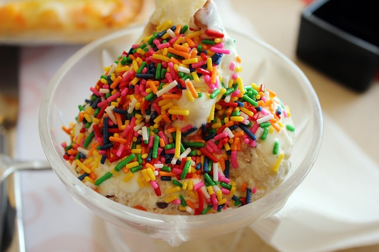

Desserts
Gulab Jamun $4.00
Ingredients:
- 300 gms Khoya
- 3 Tbsp Flour
- 3 Tbsp Sugar
- 1/2 liter Water
- Saffron, a pinch
- 200 gms refined Oil
Method:
- In a bowl, add khoya and flour mix them together.
- Make a round ball shape gulab jamun out of it.
- Make sugar syrup with 3 table spoon of sugar and 1/2 liter water. Add little saffron to it.
- Deep fry the gulab jamun in pan with oil.
- Add the fried gulab jamun into the sugar syrup.
- Serve hot.
Ice Cream: Chocolate, Vanilla, Strawberry $4.00
Only the finest Peters Ice Cream is used (No Recipe Available)
Kulfi $4.00

Ingredients:
- 2 cups whole milk
- 1/2 cup Condensed milk
- 1/4 cup Dry Milk powder
- 2 teaspoons white sugar, or to taste
- 1/2 teaspoon ground cardamom
- 1 pinch Saffron threads
- 1/4 cup chopped Pistachio nuts
Method:
- Stir the milk, condensed milk, and dry milk powder together in a heavy-bottomed pan and bring to a boil. Add the sugar, cardamom, and saffron to the boiling milk; reduce heat to low and simmer, stirring frequently, for 10 minutes.
- Remove from heat and allow to cool to room temperature; fold the pistachio nuts into the mixture.
- Pour the mixture into popsicle molds and freeze until solid, about 1 hour.
- Serve cold
Sandesh $4.00

Ingredients:
- 150 gm paneer (cottage cheese)
- 1/2 cup Khoya - Grated
- 4 Green Cardamom - Crushed
- Large pinch of kesar (Saffron)
- 6 Tbsp sugar/Gur
- 6 Almonds - Shredded thinly lengthwise
Method:
- Blend the paneer, khoya and sugar/gur together till smooth. You can do this in a blender or use the back of a katori to mash them together.
- Mix in the elaichi and set in a layer about 1/2" thick.
- Refrigerate till set and cut into squares or diamonds and serve cold.